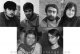

مقالههاى اين بخش
- 2 تیر 1388
- 22 خرداد 1388
دلارام علی
- 18 خرداد 1388
بی حقوقی زنان
شهرزاد آل داود
- 12 خرداد 1388
برای جلوه جواهری
نیکزاد رنگنه
- 7 خرداد 1388
برای دوستان دربندمان
مریم حسین خواه
- 4 خرداد 1388

برای دوستان دربندمان
دلارام علی
- 26 اردیبهشت 1388

برای بازداشت شده گان روز کارگر
فرناز کمالی
- 23 اردیبهشت 1388
برای بازداشت شده گان روز کارگر
ناهید کشاورز
- 21 اردیبهشت 1388

برای بازداشت شده گان روز کارگر
ستاره هاشمی
- 18 اردیبهشت 1388

اتهامات، توهمات و امیدها
ساناز محسن پور
- 16 اردیبهشت 1388
پاي اين قانون و اين امنيت تا كجا دراز شده است؟
نفیسه آزاد
- 13 اردیبهشت 1388
برای بازداشت شده گان روز کارگر
نگار انسان
- 9 اردیبهشت 1388
برای مریم مالک
فرناز کمالی
- 7 اردیبهشت 1388
مريم مالك به زندان اوين منتقل شد
محبوبه كرمي
- 3 اردیبهشت 1388
در جلسه کاری
سمیه فرید
- 21 فروردین 1388

8 مارس، روز جهانی زن
نگار انسان
- 17 فروردین 1388

وبلاگ مهمان
وبلاگ کرمانشاه / كاوه قاسمی كرمانشاهی
- 11 فروردین 1388
دید وبازدید نوروزی هم تعریف مجرمانه پیدا کرده است!
رضوان مقدم
- 3 فروردین 1388

به مناسبت 8 مارس، روز جهانی زن
ساناز محسن پور
- 25 اسفند 1387
به مناسبت 8 مارس، روز جهانی زن
زهره امین
- 21 اسفند 1387
پخش بروشور برای 8 مارس
نیکزاد زنگنه
- 17 اسفند 1387
حق طلاق
شیما جعفرزاده
- 5 اسفند 1387

در راه رسیدن به سر کار
مریم زندی
- 27 بهمن 1387
تعدد زوجات، حق ولایت
فرناز کمالی
- 23 بهمن 1387
وبلاگ مهمان
آلاچیق صبح / فرشته از آمل
- 17 بهمن 1387
جمع آوری امضا به صورت گروهی
نازلی فرخی
- 16 بهمن 1387
برای نفیسه آزاد
وبلاگ اصفهان / مهرنوش اعتمادی
- 15 بهمن 1387

سایت مهمان
مدرسه فمینیستی / ناهید کشاورز
- 13 بهمن 1387
برای نفیسه آزاد
نیکزاد زنگنه
- 12 بهمن 1387

وبلاگ مهمان
هنر و تئاتر / نگار انسان
| ... | | | | | 180 | | | | | ... |